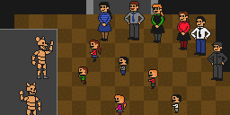
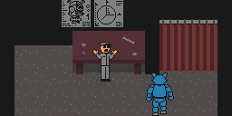
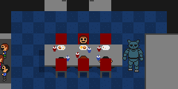
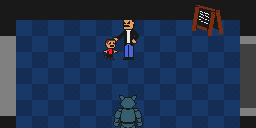
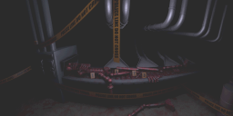
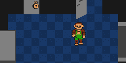
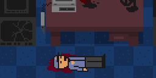
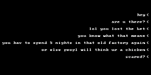

This site is currently undergoing a massive backend rework. As such, many pages may become broken for brief periods of time.
If you see any issues, please do make us aware via our Contact Form.
Thank you for browsing FNaFLore.com, we hope you enjoy the improvements that are coming to the site!
If you see any issues, please do make us aware via our Contact Form.
Thank you for browsing FNaFLore.com, we hope you enjoy the improvements that are coming to the site!
The Penguin is the
best animatronic <3
best animatronic <3

Timeline
-
9

Candy’s grand re-opening
The grand reopening of Candy’s appears to take place, featuring The Cat and The Rat. During their supposed first show of the re-opening, The Rat crouches down to a curious child in front of their stage, and reaches for him with his hand. The scene cuts to black before it finishes, but from the terrified looks on other people’s faces, it can be presumed that the child died. -
12
Rat wakes up
It is the 13th of November, 1964. Rat starts to move in Rowboatics Corp.’s robotics factory, and leaves the section of the facility he was in, leaving behind Old Candy and Blank. The Tragedy puppet claims that a mistake occurred, and that it was his fault. -
6

Old Candy is disabled
It is 1965, and Old Candy is wondering the facility. Blank is seen on the floor, in pristine condition. Upon trying to approach the man in the Parts room, Old Candy is disabled. Strangely, Shadow Candy seems to exist at this point, and guides Old Candy to the guard -
7

Old Candy and Blank are the main characters
It is 1976, and Old Candy and Blank seem to be the main characters. After collecting 5 notes, Blank sees Shadow Candy, and the minigame ends. -
8

Old Candy approaches an adult
It is 1987, and the location appears to be packed. Shadow Candy guides the player – Old Candy – towards the night-guard’s office, where a child is crying. Upon seeing Old Candy, he immediately springs up in happiness, and seeks out someone who is presumably his father. However, he has been waiting a long while, and tells off the boy, causing him to cry once again. Old Candy approaches the potential parent, and the screen goes black. -
11

The cutscene events of FNaC1 occur
The Tragedy Puppet is present in the robotics facility on the 22nd of September, 1987. On the 23rd, Two children are murdered inside the facility, either by being put through the animatronic assembly machines, or having been dumped into them post-mortem. On the 24th, police seem to have cordoned off the machine, and the Tragedy puppet pays the location a visit. On the 25th, the Tragedy Puppet seems to give Candy and Cindy “new life” -
13
Blank is mangled
A previous security guard asked his fellow co-workers to accompany him on his nightshift. When no-one came, he defended himself from Blank with a wrench, destroyng his left arm and severely damaging his head, potentially causing him to malfunction. He then left the restaurant during the middle of his shift. -
10
The grand relaunch of Freddy Fazbear’s Pizza fails
Just a few weeks after opening, Freddy Fazbear’s Pizza close their doors, retaining their older animatronic models -
1
Mary Schmidt works at Candy’s as the night-guard
1 week after Fazbear’s closure, Mary Schmidt starts her first week as the night-guard for Candy’s on the 15th of November, 1987. During night 4, she is told that the previous guard had gone missing, according to the police. She completes her week on the 20th of November, completes a 6th night on the 21st of November and is fired on the 22nd of November for tampering with the animatronics, damaging the facility and wearing too much perfume. -
2

Chester unlocks the backroom
It is 1989, and drawings indicate Chester has somehow been “rejected” on a mechanical level. Chester seemingly unlocks the backroom of the restaurant. He also sees the Tragedy Puppet at this time. It appears that no night-guard is present in the security room.
After this, Chester’s stage is cordoned off with a hazard strip, and he is dismantled – scattered across the entire restaurant. The Penguin takes the pieces, and places them into a box in the parts room. -
3
Candy’s redesign
It is 1991, and Candy’s seems to be open with a new, green motif for all of the chairs. From drawings Blank picks up, it would appear that Candy and Cindy have been remodelled, Chester has been removed and Blank remains a part of the Candy’s restaurant. -
4
Candy’s tie goes missing
It is 1992, and for some reason, Candy has lost his tie. Cindy then goes to fetch it for him. -
5

A night-guard is murdered
It is 1993, and a night-guard has been murdered. Strange laughs are heard throughout the facility. The police have surrounded the building, and upon trying to enter the open backroom, the door locks and guards burst into the location, disabling Candy. -
14

Marylin loses a bet
It is August 2007, and Marylin Schmidt, presumpted daughter of Mike and Mary Schmidt, loses a bet to her friends. She has to stay at Rowboatics Corp.’s now abandoned factory for a whole week, armed with only her camera flash and the security interface of the building. -
15
Rowboatics Corp.’s factory burns down
Rowboatics Corp.’s abandoned factory burns down. This is blamed on faulty wiring, as the building had been mistakenly receiving power since it’s closure.